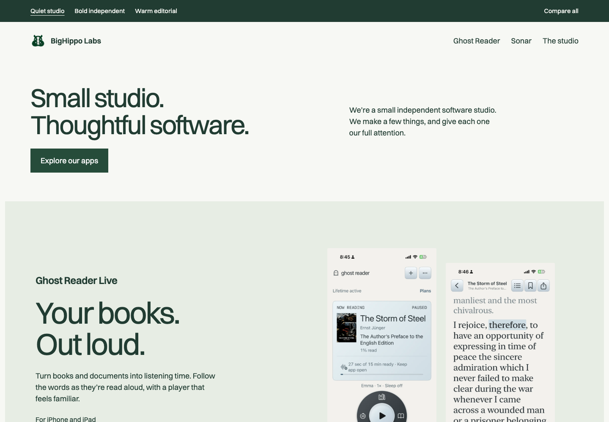
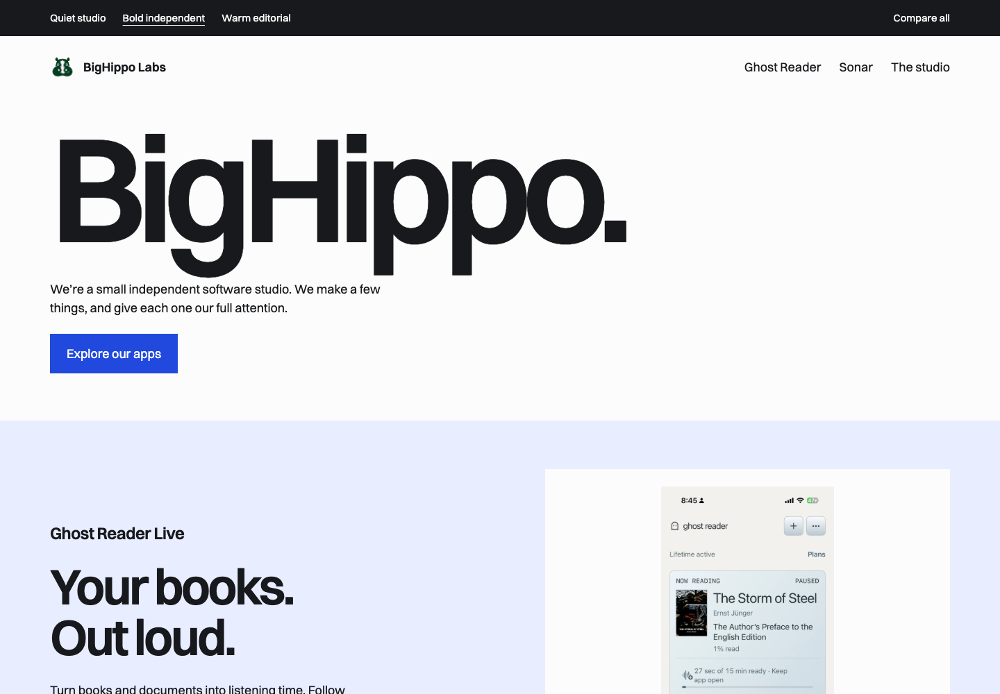
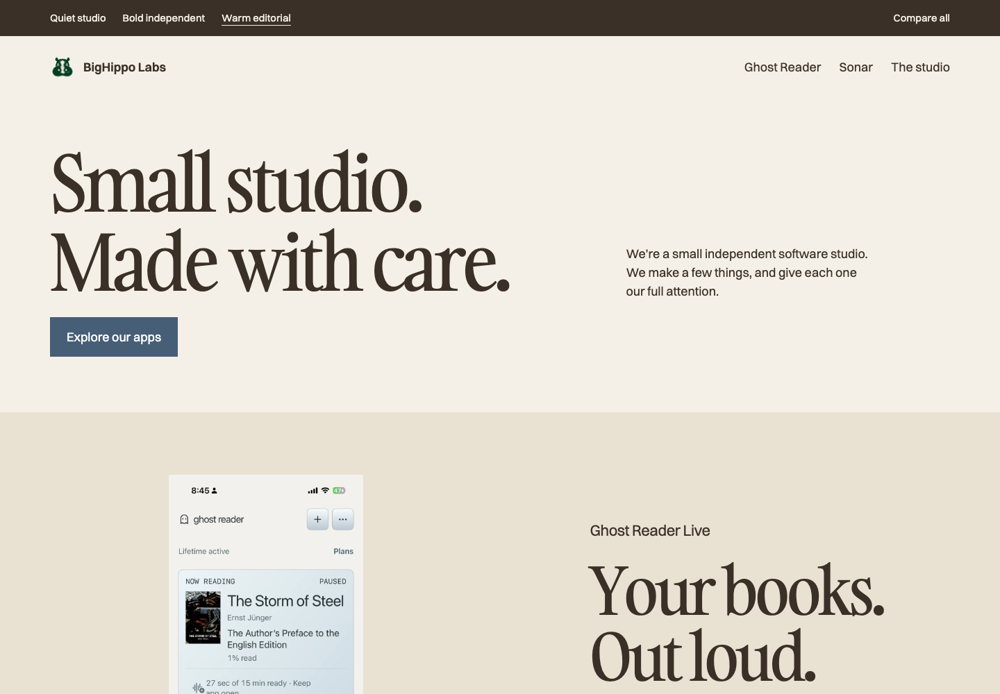

Same studio.
Three different takes.
Compare color, typography and composition using the same real apps. Each direction includes its own Ghost Reader and Sonar pages.
Quiet studio
Calm and product-focused. Closest to the approved design, with softer surfaces and quieter typography.
Explore this direction


Bold independent
Big studio type and strong contrast. The most assertive and memorable of the three.
Explore this direction


Warm editorial
Serif headlines and a slower rhythm. A warmer, more editorial studio identity.
Explore this direction


These are local visual studies, not published changes. Icon A, product separation, real screenshots and dedicated app pages stay consistent. Colors in the actual app screenshots are preserved. The theme switcher is for comparing previews only.